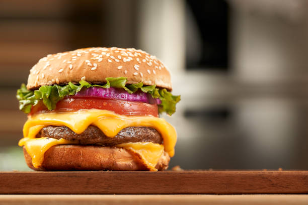

Home
Cheese Burger

A timeless American staple featuring a seasoned, seared beef patty topped with melted cheese, nestled inside a toasted bun. Layered with fresh lettuce, tomato, pickles, and classic condiments, it delivers a deeply satisfying balance of juicy, savory, tangy, and smoky flavors in every bite.
Ingredients -
- Beef
- buns
- Cheese
- Seasoning
- Toppings
- Sauce
- Butter
Steps to make the Cheese Burger -
-
Shape beef into 4 equal patties slightly wider than buns; season heavily with salt and pepper.
-
Butter sliced buns and toast cut-side down in a hot skillet until golden; set aside.
-
Cook patties in the smoking-hot skillet for 3–4 minutes without moving them to build a deep crust.
-
Flip, add cheese immediately, and cook for 2–3 more minutes until melted.
-
Spread sauces on the bottom bun, layer with patty, toppings, and top bun. Serve hot.